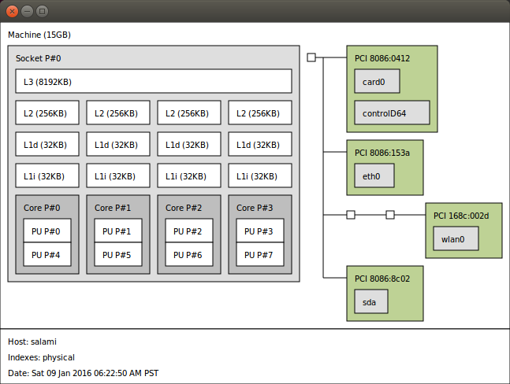
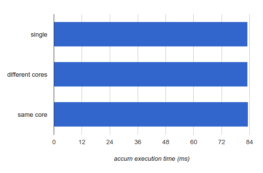
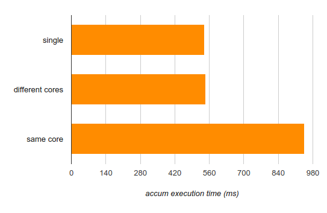

Background and introduction
For decades, the C and C++ standards treated multi-threading and concurrency as something existing outside the standard sphere - in that "target-dependent" world of shades which the "abstract machine" targeted by the standards doesn't cover. The immediate, cold-blooded replies of "C++ doesn't know what a thread is" in mountains of mailing list and newsgroup questions dealing with parallelism will forever serve as a reminder of this past.
But all of that came to an end with C++11. The C++ standards commitee realized the language won't be able to stay relevant for much longer unless it aligns itself with the times and finally recognizes the existence of threads, synchronization mechanisms, atomic operations and memory models - right there in the standard, forcing C++ compiler and library vendors to implement these for all supported platforms. This is, IMHO, one of the biggest positive changes in the avalanche of improvements delivered by the C++11 edition of the language.
This post is not a tutorial on C++11 threads, but it uses them as the main threading mechanism to demonstrate its points. It starts with a basic example but then quickly veers off into the specialized area of thread affinities, hardware topologies and performance implications of hyperthreading. It does as much as feasible in portable C++, clearly marking the deviations into platform-specific calls for the really specialized stuff.
Logical CPUs, cores and threads
Most modern machines are multi-CPU. Whether these CPUs are divided into sockets and hardware cores depends on the machine, of course, but the OS sees a number of "logical" CPUs that can execute tasks concurrently.
The easiest way to get this information on Linux is to cat /proc/cpuinfo, which lists the system's CPUs in order, providing some infromation about each (such as current frequency, cache size, etc). On my (8-CPU) machine:
$ cat /proc/cpuinfo
processor : 0
vendor_id : GenuineIntel
cpu family : 6
model : 60
model name : Intel(R) Core(TM) i7-4771 CPU @ 3.50GHz
[...]
stepping : 3
microcode : 0x7
cpu MHz : 3501.000
cache size : 8192 KB
physical id : 0
siblings : 8
core id : 0
cpu cores : 4
apicid : 0
[...]
processor : 1
vendor_id : GenuineIntel
cpu family : 6
[...]
[...]
processor : 7
vendor_id : GenuineIntel
cpu family : 6
A summary output can be obtained from lscpu:
$ lscpu
Architecture: x86_64
CPU op-mode(s): 32-bit, 64-bit
Byte Order: Little Endian
CPU(s): 8
On-line CPU(s) list: 0-7
Thread(s) per core: 2
Core(s) per socket: 4
Socket(s): 1
NUMA node(s): 1
Vendor ID: GenuineIntel
CPU family: 6
Model: 60
Stepping: 3
CPU MHz: 3501.000
BogoMIPS: 6984.09
Virtualization: VT-x
L1d cache: 32K
L1i cache: 32K
L2 cache: 256K
L3 cache: 8192K
NUMA node0 CPU(s): 0-7
Here it's also very easy to see that the machine has 4 cores, each having two HW threads (see hyperthreading). And yet the OS sees them as 8 "CPUs" numbered 0-7.
Launching a thread per CPU
The C++11 threading library gracefully made available a utility function that we can use to find out how many CPUs the machine has, so that we could plan our parallelism strategy. The function is called hardware_concurrency, and here is a complete example that uses it to launch an appropriate number of threads. The following is just a code snippet; full code samples for this post, along with a Makefile for Linux can be found in this repository.
int main(int argc, const char** argv) {
unsigned num_cpus = std::thread::hardware_concurrency();
std::cout << "Launching " << num_cpus << " threads\n";
// A mutex ensures orderly access to std::cout from multiple threads.
std::mutex iomutex;
std::vector<std::thread> threads(num_cpus);
for (unsigned i = 0; i < num_cpus; ++i) {
threads[i] = std::thread([&iomutex, i] {
{
// Use a lexical scope and lock_guard to safely lock the mutex only for
// the duration of std::cout usage.
std::lock_guard<std::mutex> iolock(iomutex);
std::cout << "Thread #" << i << " is running\n";
}
// Simulate important work done by the tread by sleeping for a bit...
std::this_thread::sleep_for(std::chrono::milliseconds(200));
});
}
for (auto& t : threads) {
t.join();
}
return 0;
}
A std::thread is a thin wrapper around a platform-specific thread object; this is something we'll use to our advantage shortly. So when we launch a std::thread, an actual OS thread is launched. This is fairly low-level thread control, but in this article I won't detour into higher-level constructs like task-based parallelism, leaving this to some future post.
Thread affinity
So we know how to query the system for the number of CPUs it has, and how to launch any number of threads. Now let's do something a bit more advanced.
All modern OSes support setting CPU affinity per thread. Affinity means that instead of being free to run the thread on any CPU it feels like, the OS scheduler is asked to only schedule a given thread to a single CPU or a pre-defined set of CPUs. By default, the affinity covers all logical CPUs in the system, so the OS can pick any of them for any thread, based on its scheduling considerations. In addition, the OS will sometimes migrate threads between CPUs if it makes sense to the scheduler (though it should try to miminize migrations because of the loss of warm caches on the core from which the thread was migrated). Let's observe this in action with another code sample:
int main(int argc, const char** argv) {
constexpr unsigned num_threads = 4;
// A mutex ensures orderly access to std::cout from multiple threads.
std::mutex iomutex;
std::vector<std::thread> threads(num_threads);
for (unsigned i = 0; i < num_threads; ++i) {
threads[i] = std::thread([&iomutex, i] {
while (1) {
{
// Use a lexical scope and lock_guard to safely lock the mutex only
// for the duration of std::cout usage.
std::lock_guard<std::mutex> iolock(iomutex);
std::cout << "Thread #" << i << ": on CPU " << sched_getcpu() << "\n";
}
// Simulate important work done by the tread by sleeping for a bit...
std::this_thread::sleep_for(std::chrono::milliseconds(900));
}
});
}
for (auto& t : threads) {
t.join();
}
return 0;
}
This sample launches four threads that loop infinitely, sleeping and reporting which CPU they run on. The reporting is done via the sched_getcpu function (glibc specific - other platforms will have other APIs with similar functionality). Here's a sample run:
$ ./launch-threads-report-cpu
Thread #0: on CPU 5
Thread #1: on CPU 5
Thread #2: on CPU 2
Thread #3: on CPU 5
Thread #0: on CPU 2
Thread #1: on CPU 5
Thread #2: on CPU 3
Thread #3: on CPU 5
Thread #0: on CPU 3
Thread #2: on CPU 7
Thread #1: on CPU 5
Thread #3: on CPU 0
Thread #0: on CPU 3
Thread #2: on CPU 7
Thread #1: on CPU 5
Thread #3: on CPU 0
Thread #0: on CPU 3
Thread #2: on CPU 7
Thread #1: on CPU 5
Thread #3: on CPU 0
^C
Some observations: the threads are sometimes scheduled onto the same CPU, and sometimes onto different CPUs. Also, there's quite a bit of migration going on. Eventually, the scheduler managed to place each thread onto a different CPU, and keep it there. Different constraints (such as system load) could result in a different scheduling, of course.
Now let's rerun the same sample, but this time using taskset to restrict the affinity of the process to only two CPUs - 5 and 6:
$ taskset -c 5,6 ./launch-threads-report-cpu
Thread #0: on CPU 5
Thread #2: on CPU 6
Thread #1: on CPU 5
Thread #3: on CPU 6
Thread #0: on CPU 5
Thread #2: on CPU 6
Thread #1: on CPU 5
Thread #3: on CPU 6
Thread #0: on CPU 5
Thread #1: on CPU 5
Thread #2: on CPU 6
Thread #3: on CPU 6
Thread #0: on CPU 5
Thread #1: on CPU 6
Thread #2: on CPU 6
Thread #3: on CPU 6
^C
As expected, though there's some migration happening here, all threads remain faithfully locked to CPUs 5 and 6, as instructed.
Detour - thread IDs and native handles
Even though the C++11 standard added a thread library, it can't standardize everything. OSes differ in how they implement and manage threads, and exposing every possible thread implementation detail in the C++ standard can be overly restrictive. Instead, in addition to defining many threading concepts in a standard way, the thread library also lets us interact with platform-specific threading APIs by exposing native handles. These handles can then be passed into low-level platform-specific APIs (such as POSIX threads on Linux or Windows API on Windows) to exert finer grained control over the program.
Here's an example program that launches a single thread, and then queries its thread ID along with the native handle:
int main(int argc, const char** argv) {
std::mutex iomutex;
std::thread t = std::thread([&iomutex] {
{
std::lock_guard<std::mutex> iolock(iomutex);
std::cout << "Thread: my id = " << std::this_thread::get_id() << "\n"
<< " my pthread id = " << pthread_self() << "\n";
}
});
{
std::lock_guard<std::mutex> iolock(iomutex);
std::cout << "Launched t: id = " << t.get_id() << "\n"
<< " native_handle = " << t.native_handle() << "\n";
}
t.join();
return 0;
}
The output of one particular run on my machine is:
$ ./thread-id-native-handle
Launched t: id = 140249046939392
native_handle = 140249046939392
Thread: my id = 140249046939392
my pthread id = 140249046939392
Both the main thread (the default thread running main on entry) and the spawned thread obtain the thread's ID - a standard defined concept for an opaque type that we can print, hold in a container (for example, mapping it to something in a hash_map), but not much other than that. Moreover, the thread object has the native_handle method that returns an "implementation defined type" for a handle that will be recognized by the platform-speficic APIs. In the output shown above two things are notable:
- The thread ID is actually equal to the native handle.
- Moreover, both are equal to the numeric pthread ID returned by pthread_self.
While the equality of native_handle to the pthread ID is something the standard definitely implies [1], the first one is surprising. It looks like an implementation artifact one definitely shouldn't rely upon. I examined the source code of a recent libc++ and found that a pthread_t id is used as both the "native" handle and the actual "id" of a thread object [2].
All of this is taking us pretty far off the main topic of this article, so let's recap. The most important take-away from this detour section is that the underlying platform-specific thread handle is available by means of the native_handle method of a std::thread. This native handle on POSIX platforms is, in fact, the pthread_t ID of the thread, so a call to pthread_self within the thread itself is a perfectly valid way to obtain the same handle.
Setting CPU affinity programatically
As we've seen earlier, command-line tools like taskset let us control the CPU affinity of a whole process. Sometimes, however, we'd like to do something more fine-grained and set the affinities of specific threads from within the program. How do we do that?
On Linux, we can use the pthread-specific pthread_setaffinity_np function. Here's an example that reproduces what we did before, but this time from inside the program. In fact, let's go a bit more fancy and pin each thread to a single known CPU by setting its affinity:
int main(int argc, const char** argv) {
constexpr unsigned num_threads = 4;
// A mutex ensures orderly access to std::cout from multiple threads.
std::mutex iomutex;
std::vector<std::thread> threads(num_threads);
for (unsigned i = 0; i < num_threads; ++i) {
threads[i] = std::thread([&iomutex, i] {
std::this_thread::sleep_for(std::chrono::milliseconds(20));
while (1) {
{
// Use a lexical scope and lock_guard to safely lock the mutex only
// for the duration of std::cout usage.
std::lock_guard<std::mutex> iolock(iomutex);
std::cout << "Thread #" << i << ": on CPU " << sched_getcpu() << "\n";
}
// Simulate important work done by the tread by sleeping for a bit...
std::this_thread::sleep_for(std::chrono::milliseconds(900));
}
});
// Create a cpu_set_t object representing a set of CPUs. Clear it and mark
// only CPU i as set.
cpu_set_t cpuset;
CPU_ZERO(&cpuset);
CPU_SET(i, &cpuset);
int rc = pthread_setaffinity_np(threads[i].native_handle(),
sizeof(cpu_set_t), &cpuset);
if (rc != 0) {
std::cerr << "Error calling pthread_setaffinity_np: " << rc << "\n";
}
}
for (auto& t : threads) {
t.join();
}
return 0;
}
Note how we use the native_handle method discussed earlier in order to pass the underlying native handle to the pthread call (it takes a pthread_t ID as its first argument). The output of this program on my machine is:
$ ./set-affinity
Thread #0: on CPU 0
Thread #1: on CPU 1
Thread #2: on CPU 2
Thread #3: on CPU 3
Thread #0: on CPU 0
Thread #1: on CPU 1
Thread #2: on CPU 2
Thread #3: on CPU 3
Thread #0: on CPU 0
Thread #1: on CPU 1
Thread #2: on CPU 2
Thread #3: on CPU 3
^C
The threads get pinned to single CPUs exactly as requested.
Sharing a core with hyperthreading
Now's time for the really fun stuff. We've learned about CPU topologies a bit, and then developed progressively more complex programs using the C++ threading library and POSIX calls to fine-tune our use of the CPUs in a given machine, up to selecting exactly which thread runs on which CPU.
But why any of this matters? Why would you want to pin threads to certain CPUs? Doesn't it make more sense to let the OS do what it's good at and manage the threads for you? Well, in most cases yes, but not always.
See, not all CPUs are alike. If you have a modern processor in your machine, it most likely has multiple cores, each with multiple hardware threads - usually 2. For example as I've shown in the beginning of the article, my (Haswell) processor has 4 cores, each with 2 threads, for a total of HW 8-threads - 8 logical CPUs for the OS. I can use the excellent lstopo tool to display the topology of my processor:
An alternative non-graphical way to see which threads share the same core is to look at a special system file that exists per logical CPU. For example, for CPU 0:
$ cat /sys/devices/system/cpu/cpu0/topology/thread_siblings_list
0,4
More powerful (server-class) processors will have multiple sockets, each with a multi-core CPU. For example, at work I have a machine with 2 sockets, each of which is a 8-core CPU with hyper-threading enabled: a total of 32 hardware threads. An even more general case is usually brought under the umberlla of NUMA, where the OS can take charge of multiple very-loosely connected CPUs that don't even share the same system memory and bus.
The important question to ask is - what do hardware threads share, and how does it affect the programs we write. Take another look at the lstopo diagram shown above. It's easy to see that L1 and L2 caches are shared between the two threads in every core. L3 is shared among all cores. For multi-socket machines. cores on the same socket share L3 but each socket usually has its own L3. In NUMA, each processor usually has access to its own DRAM, and some communication mechanism is used for one processor to access the DRAM of another processor.
Caches isn't the only thing threads within a core share, however. They also share many of the core's execution resources, like the execution engine, system bus interface, instruction fetch and decode units, branch predictors and so on [3].
So if you've wondered why hyper-threading is sometimes considered a trick played by CPU vendors, now you know. Since the two threads on a core share so much, they are not fully independent CPUs in the general sense. True, for some workloads this arrangement is beneficial, but for some it's not. Sometimes it can even be harmful, as the hordes of "how to disable hyper-threading to improve app X's performance" threads online imply.
Performance demos of core sharing vs. separate cores
I've implemented a benchmark that lets me run different floating-point "workloads" on different logical CPUs in parallel threads, and compare how long these workloads take to finish. Each workload gets its own large float array, and has to compute a single float result. The benchmark figures out which workloads to run and on which CPUs from the user's input, prepares the inputs and then unleashes all the workloads in parallel in separate threads, using the APIs we've seen earlier to set the precise CPU affinity of each thread as requested. If you're interested, the full benchmark along with a Makefile for Linux is available here; in the rest of the post I'll just paste short code snippets and results.
I'll be focusing on two workloads. The first is a simple accumulator:
void workload_accum(const std::vector<float>& data, float& result) {
auto t1 = hires_clock::now();
float rt = 0;
for (size_t i = 0; i < data.size(); ++i) {
rt += data[i];
}
result = rt;
// ... runtime reporting code
}
It adds up all the floats in the input array together. This is akin to what std::accumulate would do.
Now I'll run three tests:
- Run accum on a single CPU, to get a baseline performance number. Measure how long it takes.
- Run two accum instances on different cores. Measure how long each instance takes.
- Run two accum instances on two threads of the same core [4]. Measure how long each instance takes.
The reported numbers (here and in what follows) is execution time for an array of 100 million floats as input of a single workload. I'll average them over a few runs:
This clearly shows that when a thread running accum shares a core with another thread running accum, its runtime doesn't change at all. This has good news and bad news. The good news is that this particular workload is well suitable for hyper-threading, because apparently two threads running on the same core manage not to disturb each other. The bad news is that precisely for the same reason it's not a great single-thread implementation, since quite obviously it doesn't use the processor's resources optimally.
To give a bit more details, let's look at the disassembly of the inner loop of workload_accum:
4028b0: f3 41 0f 58 04 90 addss (%r8,%rdx,4),%xmm0
4028b6: 48 83 c2 01 add $0x1,%rdx
4028ba: 48 39 ca cmp %rcx,%rdx
4028bd: 75 f1 jne 4028b0
Pretty straightforward. The compiler uses the addss SSE instruction to add floats together in the low 32 bits of a SSE (128-bit) register. On Haswell, the latency of this instruction is 3 cycles. The latency, and not the throughput, is important here because we keep adding into xmm0. So one addition has to finish entirely before the next one begins [5]. Moreover, while Haswell has 8 execution units, addss uses only one of them. This is a fairly low utilization of the hardware. Therefore, it makes sense that two threads running on the same core manage not to trample over each other.
As a different example, consider a slightly more complex workload:
void workload_sin(const std::vector<float>& data, float& result) {
auto t1 = hires_clock::now();
float rt = 0;
for (size_t i = 0; i < data.size(); ++i) {
rt += std::sin(data[i]);
}
result = rt;
// ... runtime reporting code
}
Here instead of just adding the numbers up, we add their sines up. Now, std::sin is a pretty convoluted function that runs a reduced Taylor series polynomial approximation, and has a lot of number crunching inside it (along with a lookup table, usually). This should keep the execution units of a core more busy than simple addition. Let's check the three different modes of running again:
This is more interesting. While running on different cores didn't harm the performance of a single thread (so the computation is nicely parallelizable), running on the same core did hurt it - a lot (by more than 75%).
Again, there's good news here and bad news here. The good news is that even on the same core, if you want to crunch as many numbers as possible, two threads put together will be faster than a single thread (945 ms to crunch two input arrays, while a single thread would take 540 * 2 = 1080 ms to achieve the same). The bad news is that if you care about latency, running multiple threads on the same core actually hurts it - the threads compete over the execution units of the core and slow each other down.
A note on portability
So far the examples in this article were Linux-specific. However, everything we went through here is available for multiple platforms, and there are portable libraries one can use to leverage this. They will be a bit more cumbersome and verbose to use than the native APIs, but if you need cross-platform portability, that's not a big price to pay. A good portable library I found useful is hwloc, which is part of the Open MPI project. It's highly portable - running on Linux, Solaris, *BSD, Windows, you name it. In fact, the lstopo tool I mentioned earlier is built on hwloc.
hwloc is a generic C API that enables one to query the topology of the system (including sockets, cores, caches, NUMA nodes, etc.) as well as setting and querying affinities. I won't spend much time on it, but I did include a simple example with the source repository for this article. It shows the system's topology and binds the calling thread to a certain logical processor. It also shows how to build a program using hwloc. If you care about portability, I hope you will find the example useful. And if you know of any other cool uses for hwloc, or about other portable libraries for this purpose - drop me a line!
Closing words
So, what have we learned? We've seen how to examine and set thread affinity. We've also learned how to control placement of threads on logical CPUs by using the C++ standard threading library in conjunction with POSIX calls, and the bridging native handles exposed by the C++ threading library for this purpose. Next we've seen how we can figure out the exact hardware topology of the processor and select which threads share a core, and which threads run on different cores, and why this really matters.
The conclusion, as it always is with performance-critical code, is that measurement is the single most important thing. There are so many variables to control in modern performance tuning that it's very hard to predict in advance what will be faster, and why. Different workloads have very different CPU utilization characteristics, which makes them more or less suitable for sharing a CPU core, sharing a socket or sharing a NUMA node. Yes, the OS sees 8 CPUs on my machine, and the standard threading library even lets me query this number in a portable way; but not all of these CPUs are alike - and this is important to understand in order to squeeze the best performance out of the machine.
I haven't gone very deep into analyzing the micro-op level performance of the two presented workloads, because that's really not the focus of this article. That said, I hope this article provides another angle to figure out what matters in multi-threaded performance. Physical resource sharing is not always taking into account when figuring out how to parallelize an algorithm - but as we've seen here, it really should.
| [1] | Though it can't guarantee it, since the C++ standard "doesn't know" what POSIX is. |
| [2] | The same is done in the POSIX port of libstdc++ (though the code is somewhat more convoluted if you want to check on your own). |
| [3] | For more details see the Wikipedia page on hyper-threading and this post by Agner Fog. |
| [4] | The knowledge of which CPUs belong to the same core or different cores is taken from the lstopo diagram for my machine. |
| [5] | There are ways to optimize this loop, like manually unrolling it to use several XMM registers, or even better - use the addps instruction to add up 4 floats at the same time. This isn't strictly safe, though, since floating-point addition is not associative. The compiler would need to see a -ffast-math flag to enable such optimizations. |